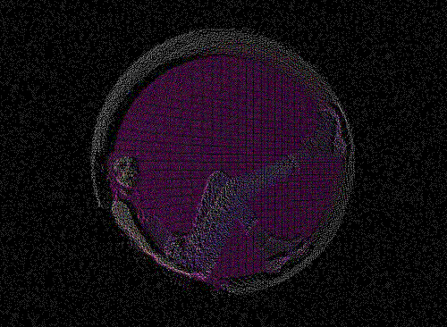
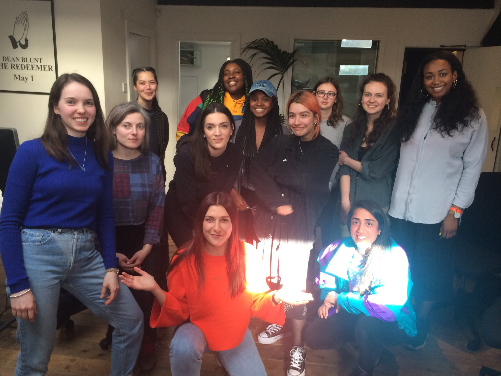

WRITING
MIX SERIES
VIDEOS
UPCOMING
-
WHENWHATWHERELINKINFO
- 🌱Jul 29, 2017
19:00 - 02:00NorbergFestival 2017Gamla Banan 6, Norberg, SwedenNorbergfestival is located at the defunct ore mine extraction site Mimerlaven, located centrally in the town of Norberg. Our stages are set up with minimal intervention in the mining facility and the adjoining power station. - 🌱Jul 07, 2017Brainchild FestivalBentley Wildfowl & Motor Museum, East Sussex, UKEast Sussex based DIY festival Brainchild invites SIREN DJs to join their lineup.
- 💿Jul 01, 2017
22:00 - 04:00Let's Go SwimmingFive Miles, Tottenham, London, UKWith Apeiron Crew + SIREN DJs.
PAST
-
WHENWHATWHERELINKINFO
- 🔊Jun 22, 2017
20:00 - 22:00NTS: SIRENNTS Studios, London, UKSIREN's monthly NTS show. - 🌱Jun 03, 2017
12:00 - 13:00Field Day FestivalVictoria Park, London, UKSIREN DJs open the RA stage at Field Day 2017. - 🎉May 27, 2017
21:00 - 05:00SIREN X Intervention Present: RecursionUnit 32, Penarth Centre, London, UKLive coding workshop with Joanne (algobabez) from 16:00 to 18:00, following party from 16:00 to 5:00 with lil mofo, Joanne (algobabez), ifeoluwa (intervention), SIREN DJs, MARIA BRUXXXA, A-Yes Ha's Indigo Zoom, and Neurosex3. - ✏️️May 20, 2017
14:00 - 17:00SIREN X NTS: Introduction to Radio Workshop with Throwing ShadeNTS Studios, London, UKOur next Introduction to Radio Workshop with NTS Radio is going to be hosted by the amazing Throwing Shade on Saturday the 20th of May! She'll be giving an introduction to radio and showing you the basics of putting together a show. Sessions are free to attend and open to women & non-binary people of all ages. - 🔊May 18, 2017
20:00 - 22:00NTS: SIRENNTS Studios, London, UKSIREN's monthly NTS show with guestmix from Peach. - 🎉May 13, 2017
22:00 - 10:00R4R X SIREN://about blank, Berlin, GermanyRoom 4 Resistance returns to ://about blank on Saturday May 13th, this time inviting SIREN from London for a collaborative event. The two like-minded collectives will come together at ://about blank in Berlin and feature Octo Octa, rRoxymore, Bambii, yhayha, JORDEE, R4R DJs & SIREN DJs. - 💿May 12, 2017
23:00 - 18:00Balance presents SIREN w/ Laurel Halo, The Empire Line (live)Institut fuer Zukunft, Leipzig, GermanyBALANCE continues into 2017 with its third collaborative event, proudly presenting the queer / femme collective SIREN. Preceding the dance floor experience, BALANCE has organised a workshop series and performance with choreographer CARMEL KÖSTER, and will participate on a introductory panel with special guests at Conne Island the same evening. - 💿Apr 22, 2017
22:30 - 04:00The Run Out After PartyThe Copeland Gallery, Peckham, London, UKThe Run Out's RSD after party with Hyperdub DJs, Night Slugs DJs, SIREN DJs, 22a DJs & Rye Wax. - 🔊Apr 20, 2017
20:00 - 22:00NTS: SIRENNTS Studios, London, UKSIREN's monthly NTS show with guestmix from Nene H. - ✏️️Apr 15, 2017
14:00 - 17:00SIREN X NTS: Introduction to Radio Workshop with MoxieNTS Studios, London, UKThis month's workshop will be led by Moxie! She'll be giving an introduction to radio and showing you the ropes of putting together a show. - 🎉Mar 25, 2017
22:00 - 06:00SIREN X Chapter 10 Present Chapter FemmeBloc, London, UKWith K-HAND, Debonair and SIREN DJs. - 🔊Mar 23, 2017
20:00 - 22:00NTS: SIRENNTS Studios, London, UKSIREN's monthly NTS show with guestmix from Maja Pa. - 💿Mar 23, 2017
20:00 - 12:00ICA Music: Wysing Polyphonic Record LaunchICA, The Mall, London, UKThe ICA are pleased to collaborate with Wysing Arts Centre to launch their new record label Wysing Polyphonic, with a live performance by the first band to release on the label, Ectopia, alongside special guests xname, SIREN DJs and N-Prolenta. - 💿Mar 13, 2017
19:00 - 23:00The XX Present Night + DayThe O2 Academy Brixton, London, UKwith Cat Power, Jehnny Beth (Savages) + SIREN DJs. - 💿Mar 08, 2017
21:00 - 02:00Camgirls 2.0 Launch X International Women's Day FundraiserThe Alibi, Dalston, London, UKCAMGIRLS is an interactive, collaborative project for today's Venus, using art to open up discussions about women on the internet. It's back! We're celebrating International Women's Day and raising funds for the amazingNational Ugly Mugs Charity. With music from GROSSMARY, BBZ London, Amz/MAGIC CLIT, Klein (DJ set) & SIREN DJs. - ✏️️Mar 04, 2017
14:00 - 17:00SIREN X NTS: Introduction to Radio Workshop with A.GNTS Studios, London, UKThe awesome A.G (The #MnM show) will be giving an introduction to radio and showing you the ropes of putting together a show. Sessions are free to attend and open to women & non-binary people of all ages. - 🎹Feb 24, 2017
19:00 - 23:00SIREN presents Wilted Woman1 Silver Road, Lewisham, London, UKSIREN's first live AV show brings over Berlin's Wilted Woman to play at 1 Silver Road: an intimate converted water tank turned venue in Lewisham. Featuring support from Object Blue and live visuals from Letty Fox. Advance tickets only - (please email hello@sirenlondon.co.uk to purchase). - 🔊Feb 23, 2017
20:00 - 22:00NTS: SIRENNTS Studios, London, UKSIREN's monthyl NTS show with guest live set from Wilted Woman. - ✏️️Feb 11, 2017
14:00 - 17:00SIREN X NTS: Introduction to Radio Workshop with DEBONAIRNTS Studios, London, UKWe are thrilled to announce the first in a series of radio workshops for women and non binary people that we will be running with NTS Radio! Our first session will be hosted by the inimitable DEBONAIR on the 11th of February who will help you put together the skills for that radio show idea you’ve been itching to develop. - 🔊Jan 26, 2017
20:00 - 22:00NTS: SIRENNTS Studios, London, UKSIREN's monthly NTS show with guestmix from Anina. - 🎉Jan 14, 2017
19:00 - 07:00SIREN First Birthday PartySecret London Location, UKSIREN DJs + friends celebrate SIREN's first birthday alongside open decks and workshops. - 🎉Dec 10, 2016
20:00 - 23:00AMPLIFY: SIREN X Discwoman X BrutazDIY Space for London, London, UKSIREN (London), Discwoman (NY) and Brutaż (Warsaw) join together for AMPLIFY: a series of screaming workshops taking place in London, New York and Warsaw. - 🔊Dec 01, 2016
20:00 - 22:00NTS: SIRENNTS Studios, London, UKSIREN's monthly NTS show with guestmix from CL. - 🎉Nov 24, 2016
22:00 - 02:30SIREN w/ Dr. Rubinstein + Venus Ex MachinaRye Wax, Peckham, London, UKSIREN presents... Dr. Rubinstein, Venus Ex Machina + SIREN DJs. - 🔊Nov 19, 2016
18:00 - 19:00NTS: SIRENNTS Studios, London, UKSIREN do a special NTS show with Solid Blake on Channel 2. - 🔊Nov 03, 2016
20:00 - 22:00NTS: SIRENNTS Studios, London, UKSIREN's monthly NTS show with guestmix from Nazira. - 💬Nov 03, 2016
19:00 - 23:00Techno & The CityFiumano Projects, London, UKTechno&Philosophy and Fiumano Projects present: "Techno and The City" - An art exhibition. 3 November sees a SIREN members take part in a panel discussion, performances and a DJ set. - 🔊Oct 13, 2016
21:00 - 23:00NTS: SIRENNTS Studios, London, UKSIREN's monthly NTS show.
Please note that this month's show is on Channel 2, at the different time of 22:00 - 23:00. - 🔊Sep 08, 2016
20:00 - 22:00NTS: SIRENNTS Studios, London, UKSIREN's monthly NTS show with guestmix from The Subdermic. - 🌱Aug 26, 2016
16:00 - 03:00CHART Art Fair Opening ConcertKunsthal Charlottenborg, Copenhagen, DenmarkWith SIREN DJs - 🎉Aug 20, 2016
18:00 - 03:00SIREN Presents: SynchroniseThe Yard, Hackney Wick, London, UKFundraiser for Sisters Uncut with Special Guest, Covco, UNITI, Resis'Dance, Goldsnap, Tone (Gal-Dem), The Batty Mama, Ndeko & SIREN DJs. - 💿Aug 19, 2016
23:00 - 05:00As Below, So AboveBussey Building, Peckham, London, UKSIREN take over the Rye Wax basement with sets from Machine Woman & SIREN DJs. - 🔊Aug 11, 2016
20:00 - 22:00NTS: SIRENNTS Studios, London, UKSIREN's monthly NTS show. - 🔊Aug 09, 2016
11:00 - 13:00Balamii Radio X SIRENBalamii radio, Peckham, London, UKSIREN guest mix for Balamii Radio. - 🔊Jul 19, 2016
00:00 - 02:00Radar Radio X SIRENRadar Studios, London, UKSIREN's monthly Radar show. - 🎉Jul 07, 2016
22:00 - 02:30SIREN w/ rRoxymore [Live Set], Moonbow LIVE + SIREN DJsRye Wax, Peckham, London, UKSIREN Presents rRoxymore (Live), Moonbow (Live) & SIREN DJs. - 🔊Jun 21, 2016
00:00 - 02:00Radar Radio X SIRENRadar Studios, London, UKSIREN's monthly Radar show, with guestmix from Proteus. - 🔊Jun 16, 2016
18:00 - 20:00Radar Radio Presents: Access With... Martha & SIRENRadar Studios, London, UKRadar Radio opens its doors to a public audience with sets from Martha & SIREN. - 🔊Jun 10, 2016
17:00 - 19:00NTS: SIRENNTS Studios, London, UKSIREN guestmix for NTS radio. - 🔊May 28, 2016
15:00 - 17:00Balamii Radio X SIRENBalamii radio, Peckham, London, UKSIREN guestmix for Balamii Radio. - 💿May 27, 2016
19:00 - 23:30WORLD of PAIN Vol. 1Unit 16, Brixton, London, UKNOiD, Neil Quigley, Jorge Coco and SIREN DJs. - 🔊May 17, 2016
00:00 - 02:00Radar Radio X SIRENRadar Studios, London, UKSIREN's monthly Radar show with guestmix from Anja Zaube. - 💬May 13, 2016
16:00 - 17:00SIREN & CDR Present: Addressing Imbalance in the Music IndustryBussey Building, Peckham, London, UKSIREN host a panel discussion with Lara Rix Martin (Objects Ltd), Natasha Shehata (Wired Radio), Aurora Mitchell (Dummy, Crack Magazine) & Stephseeks (Born n Bread) as part of CDR's Knowledge day of workshops and industry insights. - 💿May 12, 2016Five Bells with SIRENFive Bells, New Cross, London, UKWith SIREN DJs.
- 💿May 05, 2016
20:00 - 02:30Rye Wax After Dark with Ikonika & SirenRye Wax, Peckham, London, UKWith Ikonika + SIREN DJs. - 🔊Apr 29, 2016
21:00 - 22:00N10.as Radio X SIRENN10.as Radio, Montreal, Quebec, CanadaSIREN guestmix for Genero Sound on N10.as Radio. - 🔊Apr 19, 2016
00:00 - 02:00Radar Radio X SIRENRadar Studios, London, UKSIREN's monthly Radar show. - 💿Apr 16, 2016
12:00 - 22:00It's Not RSD But It's OKRye Wax, Peckham, London, UKIn-store sets all day at Rye Wax, featuring sets from SIREN DJs. - 🎉Apr 14, 2016
22:00 - 02:30SIREN presents Apeiron Crew (London Debut) & SIREN residentsRye Wax, Peckham, London, UKSIREN presents Apeiron Crew (London debut) & SIREN DJs. - 🔊Mar 15, 2016
00:00 - 02:00Radar Radio X SIRENRadar Studios, London, UKSIREN's monthly Radar show, with guestmix from Lenny Jams. - 🔊Feb 16, 2016
00:00 - 02:00Radar Radio X SIRENRadar Studios, London, UKSIREN's monthly Radar show. - 🎉Jan 14, 2016
22:00 - 02:30SIREN LAUNCH w/ resom, Lenny Jams + SIREN DJsRye Wax, Peckham, London, UKSIREN launch with Resom (://about:blank), Lenny Jams & SIREN DJs.
ABOUT SIREN
SIREN is a London based collective formed in 2016. Our aim is to create a safe and immersive space for those who are underrepresented in dance music, whilst continuing to critique the electronic music scene as a whole. Alongside throwing parties and music events, we publish a zine and online platform, run a monthly NTS radio show, host workshops and consult on other events. Members of the collective are also DJs, producers, VJs, writers, graphic designers and fine artists.

Press


Home page cover art created by FluffLord
Website developed by Ana Meisel
SIREN DJs
SIREN is a collective that started a year ago with the purpose of creating a space for those under-represented in dance music on lineups and in crowds. SIREN DJs honed their high energy sets soundtracking their own parties across London, playing techno in its broadest sense, from electro and breakbeat to minimal, acid and trance. As a collective their parties, zines and NTS shows aim to be musical and political platforms for women & non-binary people, as well as a space to critique current trends within electronic music and create their own alternatives.
↓

Fran - VJ
Fran is a multidisciplinary artist working across video, text and graphics. Her live visual installations aim to enhance the sonic and physical experiences of being in the club, without taking the focus away from the musical elements of the space. Inspired by sci-fi narratives, cyberfeminism and glitch aesthetics, she creates glittering textures, objects and virtual spaces.
Portfolio →

Jay D - DJ
With an acquired taste for anything psychedelic, Jay D’s love for electronic music stems from 80’s new wave, punk and coldwave. Her equal obsession with high energy acid house, 90’s techno and trance combined with her roots in dark synthy electro and percussion based grooves makes for dynamic sets which showcase her eclectic style and diverse appreciation for music across genres and timespans.
Listen →
Moonbow - DJ / Producer
Moonbow is the moniker of producer and DJ Eleanor Hardwick . Working by day as a photographer and music video director, her passion lies in combining mediums to create conceptual, immersive sonic experiences. Crack Magazine described her approach as "contributing avant-garde pop to a techno-orientated scene” which is reflected both in her own productions, and her eclectic DJ sets and mixes, that often combine both organic and electronic sounds, featuring anything from breakbeat, acid, footwork, early dubstep and IDM - to the psychedelic modular experiments of early electronic music.
Listen →

re:ni - DJ
Growing up listening to drum & bass, dubstep and garage, as a selector Lauren (re:ni) plays an energetic blend of UK techno, breaks and electro.
Listen →


Sybil - DJ
As a DJ Sybil’s selections embrace the ravey side of techno; favouring broken rhythms, low-swung electro, absurd acid trance, and anything with a breakbeat. Working by day behind the counter at Rye Wax, her taste has also been influenced by the shop’s trademark appetite for strange sounds.
Listen →
SIGN UP
Subscribe to our mailing list below:
RADIO
We have a monthly show on NTS Radio, Thursday 20:00 - 22:00.
Archive of shows with tracklists: www.nts.live/shows/siren
WORKSHOPS
SIREN X NTS: Introduction to Radio Workshops
A joint project between SIREN and NTS with the aim of introducing more women and non-binary people to radio. For each workshop session we bring in an NTS host to teach a masterclass to a group of 12 women and non-binary people, then we split the class into groups to rotate around different exercises and have a go on some equipment before the end of the session. Past NTS hosts for these have been DEBONAIR, A.G, Moxie and Throwing Shade. These sessions are open to all ages and free to attend.
Photos of past workshops in action:

CONTACT
For SIREN DJ bookings, to submit your work for consideration for online features, zine contributions, mix series, being involved in one of our events, possible collaborations, or to just say Hi please email us on:
hello[@]sirenlondon[.]co[.]uk
To contact SIREN members individually, for DJ bookings and other projects, please email:
charlotte[@]sirenlondon[.]co[.]uk
eleanor[@]sirenlondon[.]co[.]uk
fran[@]sirenlondon[.]co[.]uk
jay[@]sirenlondon[.]co[.]uk
lauren[@]sirenlondon[.]co[.]uk
sybil[@]sirenlondon[.]co[.]uk
DONATE
SIREN is a self funded, non-for-profit project run voluntarily by its core members. All of the money we make from our events and DJ sets goes back into continuing our work and paying collaborators fairly.
We always appreciate your support if you would like to donate!
💸
LINKS
These are some of the crews, platforms & organisations that inspire us
[constantly evolving]
Organisations
antiuniversity.orgwysingartscentre.org
sistersuncut.org
prostitutescollective.net
network23.org/antiraids
movementforjustice.org
Publications & blogs
gal-dem.compolyesterzine.com
datacide-magazine.com
coralthinkstoomuch.wordpress.com
soundstudiesblog.com
Collectives
Discwoman - discwoman.comTUF - tuf-seattle.com
Drömfakulteten - dromfakulteten.tumblr.com
UNITI - facebook.com/unitildn
Resis’dance - resisdance.wixsite.com/london
The Batty Mama - facebook.com/TheBattyMama
BBZ London - facebook.com/bbzlondon
Femdex - femdex.net
ATTAGIRL! - facebook.com/attagirlparty
SISTER - facebook.com/groups/815337868549777
PROTEUS - facebook.com/proteuslondon
Female: Pressure - femalepressure.net
Room 4 Resistance - facebook.com/room4resistance
Labels
objects.limitednon.com.co